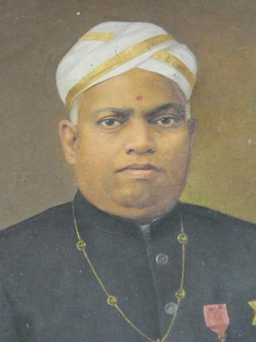

ജനനം : 1877 ജൂൺ 6 (1052 ഇടവം 25)
പിതാവ് : സുബ്രഹ്മണ്യ അയ്യർ
മാതാവ് : ഭഗവതിയമ്മ
മുഴുവൻ പേര് : ഉള്ളൂർ എസ്. പരമേശ്വരയ്യർ
മരണം : 1949 ജൂൺ 15
മലയാളത്തിന്റെ പ്രഗത്ഭനായ കവിയായ ഉള്ളൂർ പണ്ഡിതൻ, ഗവേഷകൻ, എന്നീ നിലകളിലും പ്രാവീണ്യം തെളിയിച്ചിട്ടുണ്ട്. ചങ്ങനാശ്ശേരിയിൽ പെരുന്നയിൽ താമരശേരി ഇല്ലത്താണ് പരമേശ്വരയ്യർ ജനിച്ചത്. ബാല്യത്തിൽതന്നെ സംസ്കൃതത്തിലും ഇംഗ്ലീഷിലും പാണ്ഡിത്യം നേടി. തുടർന്ന് ബി.എ, ബി.എൽ ബിരുദങ്ങൾ കരസ്ഥമാക്കി. തിരുവിതാംകൂർ സർക്കാരിന്റെ കീഴിൽ സീനിയർ ദിവാൻ പേഷ്കാർ, റവന്യൂ കമ്മീഷണർ, ചീഫ് സെക്രട്ടറി എന്നീ നിലകളിൽ സേവനമനുഷ്ഠിച്ചു. കേരള സാഹിത്യപരിഷത്തിന്റെ പ്രസിഡന്റായിരുന്നു. ജീവിതത്തിന്റെ ഉത്തരാർധത്തിൽ അധികകാലവും ഭാഷാസാഹിത്യഗവേഷണങ്ങൾക്കായി ചെലവഴിച്ചു. ഗൗരവത്തോടുകൂടിയ സാഹിത്യ ഗവേഷണത്തിന് അടിസ്ഥാനമിട്ടത് ഉള്ളൂരാണ്. 1914-ൽ മഹാകാവ്യമായ ഉമാകേരളം രചിച്ചു. അദ്ദേഹത്തിന്റെ കവിതകളിൽ സംസ്കൃതത്തിന്റെ സ്വാധീനം കൂടുതലുണ്ടായിരുന്നു. പ്രശസ്തമായ 'ഉമാകേരളം' എന്ന മഹാകാവ്യം അദ്ദേഹത്തിന്റെ സംസ്കൃതാഭിമുഖ്യത്തിനു തെളിവാണ്. എങ്കിലും കാല്പനിക പ്രവണത ഉൾകൊള്ളുന്ന ഖണ്ഡകാവ്യങ്ങളും ഭാവഗീതശൈലിയുള്ള ലഘു കവിതകളും ഇദ്ദേഹം രചിച്ചിട്ടുണ്ട്. ഉല്ലേഖ ഗായകൻ എന്നറിയപ്പെടുന്ന ഉള്ളൂരിന് കൊച്ചിരാജാവും, ശ്രീ ചിത്തിര തിരുനാൾ മഹാരാജാവും യഥാക്രമം കവിതിലകൻ, മഹാകവി എന്നീ ബിരുദങ്ങൾ നൽകി ആദരിച്ചു. ശ്രീമൂലം തിരുനാൾ മഹാരാജാവിന്റെ വീരശൃംഖല, റാവു സാഹിബ് സാഹിത്യ ഭൂഷൺ, ഉജ്ജ്വല ശബ്ദാഢ്യൻ എന്നീ ബഹുമതികളും അദ്ദേഹത്തിന് ലഭിച്ചിട്ടുണ്ട്. പിംഗള, കർണ്ണ ഭൂഷണം, ചിത്രശാല, ദീപാവലി തുടങ്ങിയ ഖണ്ഡകാവ്യങ്ങളും, അരുണോദയം, കിരണാവലി, മണി മഞ്ജുഷ, രത്നമാല തുടങ്ങിയ കവിതാ സമാഹാരങ്ങളും അദ്ദേഹത്തിന്റെ സൃഷ്ടികളിൽ മുൻപന്തിയിൽ നിൽക്കുന്നു. അഞ്ചു വാല്യങ്ങളായി കേരളസർവ്വകലാശാല പ്രസിദ്ധീകരിച്ചിട്ടുള്ള കേരളം സാഹിത്യചരിതം ആ മേഖലയിലെ ഏറ്റവും ആധികാരിക കൃതിയാണ്.
കാക്കേ കാക്കേ കൂടെവിടെ?
"കാക്കേ കാക്കേ കൂടെവിടെ?
കൂട്ടിനകത്തൊരു കുഞ്ഞുണ്ടോ?
കുഞ്ഞിനു തീറ്റ കൊടുക്കാഞ്ഞാല്,
കുഞ്ഞു കിടന്നു കരഞ്ഞീടും..”
“കുഞ്ഞേ കുഞ്ഞേ നീ തരുമോ..
നിന്നുടെ കയ്യിലെ നെയ്യപ്പം?”
“ഇല്ല തരില്ലീ നെയ്യപ്പം..”
“അയ്യോ കാക്കേ പറ്റിച്ചോ!!!!”
വിശ്വം ദീപമയം
മാലുള്ളതാണീ മഹിയെന്നുവെച്ചു
മാഴ്കുന്നതെന്തിനു മനുഷ്യരേ! നാം ?
തൻസൃഷ്ടിയിൽപ്പെട്ടൊരത്തിനുമീശൻ
സ്ഥാനത്തെ നൽകേണ്ടതു ധർമമല്ലേ ?
കൈവിട്ടുപൊയ്പ്പോയ് പകലെന്നുവെച്ചു
കണ്ണീരൊലിപ്പിച്ചൊരു കാര്യമുണ്ടോ ?
വരേണ്ടതല്ലേ നിശയും നമുക്കു
വപുസ്സിനുതഥാനമുഷസ്സിലേകാൻ ?
ഇന്ൻ പൊളിഞ്ഞാലുഡുപംക്തിയെക്കൊ -
ണ്ടിരുട്ടുതൽക്കാലമകറ്റിയീശൻ
അടഞ്ഞ കൺ നമ്മൾ തുറന്നീടും മുൻ -
പദദീപമേകുന്നു കൊളുത്തി വീണ്ടും.
വേലയ്ക്കു ദീപപ്രഭയത്ര വേണം ;
വിശ്രാന്തിക്കൊള്ളുന്നതിനിത്രപോരും ;
അതായിരിക്കാം പൊരുളാ പ്രവൃത്തി -
ക്കജൻ ഹിതം മർതത്യനറിഞ്ഞു ചെയ്വോൻ.
വിളക്കു കത്തിപ്പനന്തിയായാൽ
മിന്നാമിനുങ്ങും ത്വരയാർന്നിരിക്കേ,
ദീനത്വമെന്തിന്നു നമുക്കുമാത്രം
തീക്കോലുരയ്ക്കാൻ? തിരിയിൽക്കൊളുത്താൻ?
അല്ലെങ്കിലും സ്വച്ഛവിവേകദീപ -
മകത്തു കത്തുന്നവളേതു ധീരൻ
വിഷാധമേന്തും, വിധി ദൂരെയെങ്ങോ
വിയത്തിൽ മിന്നിച്ച വിളക്കു കെട്ടാൽ?
ഉണർന്നിടാമെന്നു നിനച്ചുതന്നെ -
യുറങ്ങുവാനോർപ്പതു നമ്മളെല്ലാം ;
പ്രാദുർഭാവിച്ചാൽ മതി,യമമഹതതാം
പ്രത്യാശ സർവതത്തിലുമൊന്നുപോലെ
മനസ്സിൽ നൈരാശ്യമെഴുന്നവന്നു
മധ്യാഹ്നവും പ്രത്യഹമർധരാത്രം;
ശുഭം പ്രതീക്ഷിപ്പവനേതു രാവും
സൂര്യാംശുദീപ്തം പകൽപോലെതന്നെ.